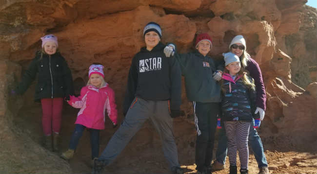

Target Audiance
The target audiance for the WhetherToGoOut websit will be residence of the Preston, Soda Springs and Fish Haven areas of Idaho. The site is specifically geared towards families and individuals who enjoy outdoor adventures and would like to make sure the weather will be acceptable for their outings.
Personas to be considered for this website
Persona - Middle Aged Mother - Linda Jolly

Linda is a stay a home mother of five. She has a college degree in Special Education. Her family is busy with many activities during the week which keeps everyone very busy and leaves little family time. Linda is dedicated to creating family bond through outside recreation on a weekly basis. Whether it is gliding tranquilly through breathe taking calm water on the lake near Fish Haven or hiking, Linda relies on the weather forcast to help her plan sucessful adventures for her family.

Family Fun Rafting Adventures offers complete outdoor experiences. After an amazing day of rafting, unwind with the ones who matter most under the most amazing star filled sky. Your campsite will be all set up and a campfire ready to go. Just bring the laughter, ghost stories and love for the perfect evening never to be forgotten. Enjoy the awe and amazement on the faces of your loved ones as they stare up at the endless stars and truly wonder at the magnificence of the surroundings.